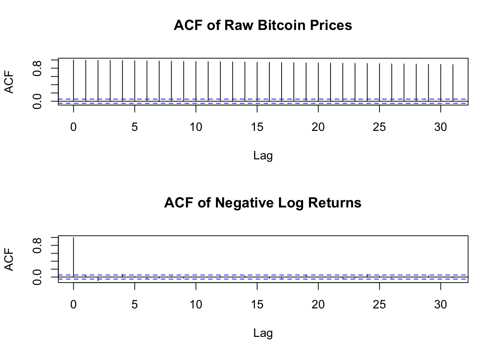
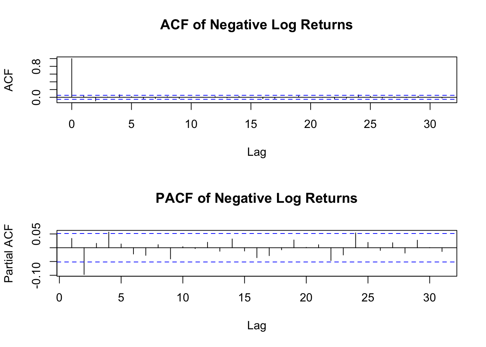
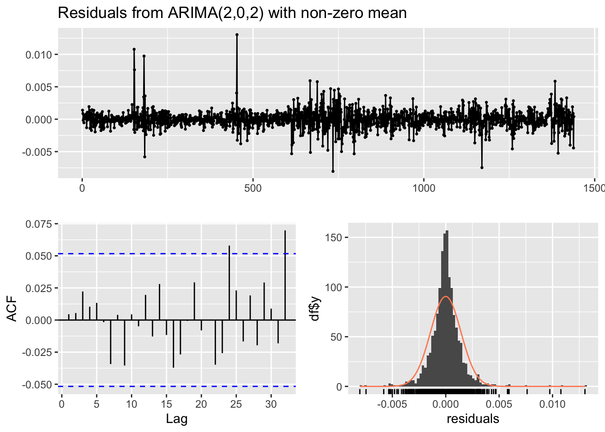
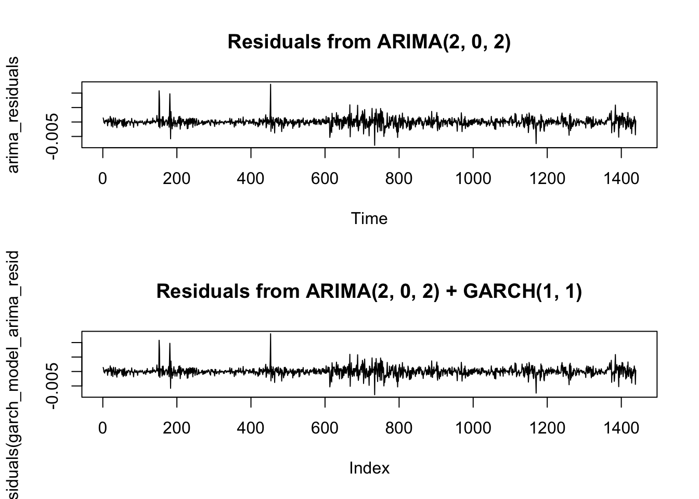
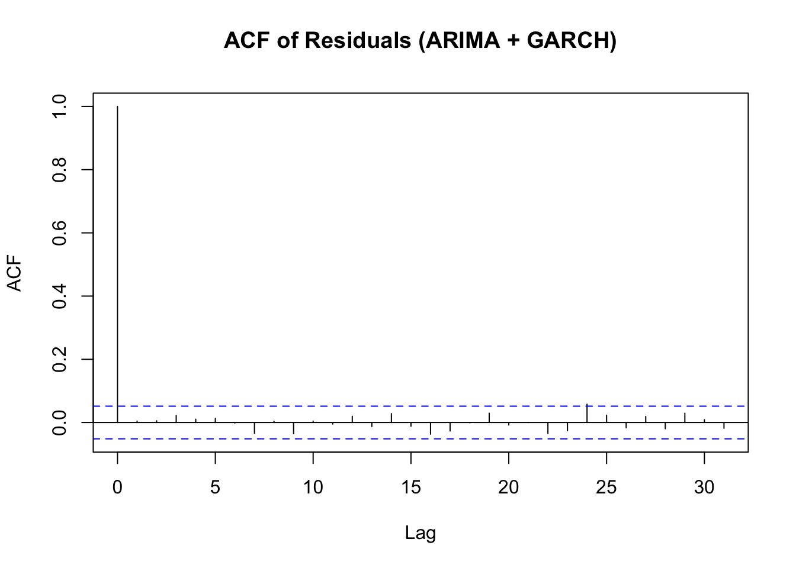
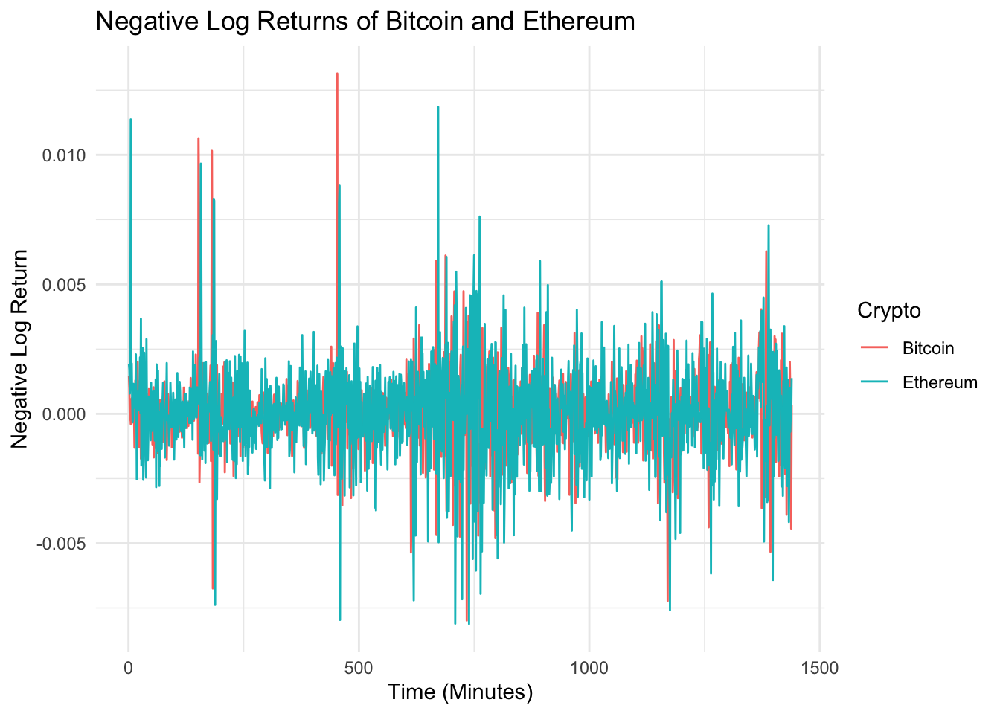
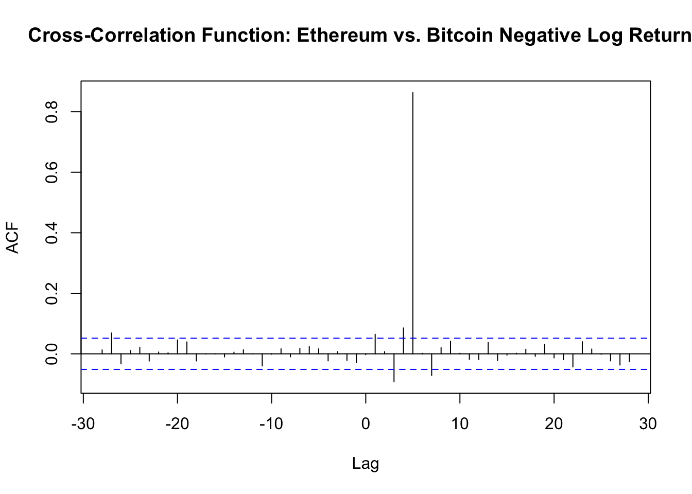

Lodrik Adam, Sophie Daya, Jeff Macaraeg, Julien Perini, Alexandra Maria Santana Boado
Published
December 7, 2024
Code
# load the required packages and install them if they are not.source(here::here("code","setup.R"))# getiing the working directorywd <- here::here()# Loading the datacrypto_data <-read.csv(here("data", "crypto_data.csv"))# scaling factorscaling_factor <-100000
Part 1: Financial returns and normality
The working directory is set to: /Users/lodrik/Documents/GitHub/RA_Praticals
a) Load Bitcoin data and assess price stationarity
Question
Read in the Bitcoin data from file Crypto data.csv. Then, assess the stationarity of the (raw) Bitcoin prices.
First, let’s take a look at the Bitcoin Prices on a plot.
Code
## Step 1: Extract the Bitcoin pricesbitcoin_prices <- crypto_data$Bitcoin## Step 2: Plot the Bitcoin pricesplot(bitcoin_prices,type="l",col="blue", main="Bitcoin Prices",xlab="Time",ylab="Price")
The graph of the raw Bitcoin prices suggest that the series might not be stationary.
Let’s perform the Augmented Dickey-Fuller test to check if the raw Bitcoin prices are stationary.
Code
## Step 3: test for stationarityadf.test(crypto_data$Bitcoin)
Augmented Dickey-Fuller Test
data: crypto_data$Bitcoin
Dickey-Fuller = -2.4484, Lag order = 11, p-value = 0.3885
alternative hypothesis: stationary
Since the p-value is significantly bigger than 0.05, we can not reject the null hypothesis and therefore, we can conclude that the raw Bitcoin prices are non-stationary.
b) Create and plot Bitcoin negative log returns, assess stationarity
Question
Create a function to transform the Bitcoin prices into their negative log returns counterparts. Plot the latter series and assess their stationarity. To compare the series, also plot the negative log returns on a common scale.
Let’s create a function to compute the negative log returns of a given price series. We will then apply this function to the Bitcoin prices to compute the negative log returns.
Code
## Step 1: Create a function to compute negative log returnsnegative_log_returns <-function(prices) {return(-diff(log(prices)))}## Step 2: Use the fucntion on Bitcoin pricesneg_log_returns_bitcoin <-negative_log_returns(bitcoin_prices)
We can now plot the negative log returns series and the raw Bitcoin prices to compare.
Code
## Step 3: Plot the negative log returns seriesplot(neg_log_returns_bitcoin,type="l",col="blue", main="Negative Log Returns of Bitcoin Prices", xlab="Time",ylab="Negative Log Returns")
If we scale bitcoin prices and negative log returns, we can compare both time series on a plot with a common scale.
Code
# Top Plot: Plot both time series on the same graphtrimmed_bitcoin_prices <- bitcoin_prices[-1] # Make sure lengths matchplot(neg_log_returns_bitcoin,type ="l",col ="blue",ylab ="Values",xlab ="Index", main ="Negative Log Returns and Bitcoin Prices",ylim =range(c(neg_log_returns_bitcoin, trimmed_bitcoin_prices)))# Add Bitcoin prices on the same plotlines(trimmed_bitcoin_prices, col ="red")# Add a legendlegend("right",legend =c("Neg Log Returns", "Bitcoin Prices"),col =c("blue", "red"),lty =1)
Code
# Reset the plotting area to default settings (optional, for future plots)par(mfrow=c(1,1))
Code
# Set up the plotting area to have 3 rows and 1 columnpar(mfrow=c(1,1))# Bottom Left Plot: Plot the negative log returns seriesplot(neg_log_returns_bitcoin,type ="l",col ="blue", main ="Negative Log Returns of Bitcoin Prices", xlab ="Time",ylab ="Negative Log Returns")
Code
# Bottom Right Plot: Plot the Bitcoin pricesplot(bitcoin_prices, type ="l", col ="red", main ="Bitcoin Prices", xlab ="Time", ylab ="Price")
Visually, the negative log returns series does not appear to indicate a clear trend or seasonality. The variance, although it fluctuates in the middle, seems relatively constant. This observation suggests that the series may be stationary. To confirm this, we will perform the Augmented Dickey-Fuller test to assess the stationarity of the negative log returns.
Code
## Step 5: Test the stationarity of the negative log returns with the Augmented Dickey-Fuller testadf.test(neg_log_returns_bitcoin)
Augmented Dickey-Fuller Test
data: neg_log_returns_bitcoin
Dickey-Fuller = -11.035, Lag order = 11, p-value = 0.01
alternative hypothesis: stationary
Since the p-value is significantly smaller than 0.05, we can reject the null hypothesis and conclude that the negative log returns series is stationary.
c) Check negative log returns normality with histograms, QQ-plots, Anderson-Darling
Question
Are the negative log returns normally distributed? Draw histograms, check QQ-plots and use an Anderson-Darling testing procedure to answer this question.
Let’s first plot the histogram and QQ-plot of the negative log returns to visually assess the normality.
Code
## Step 1: Plot the histogram and QQ-plot of the negative log returnspar(mfrow=c(1, 2))# Plot the histogram of the negative log returnshist(neg_log_returns_bitcoin,breaks=50,col="lightblue", main="Histogram of Negative Log Returns",xlab="Negative Log Returns")# Plot the QQ-plot of the negative log returnsqqnorm(neg_log_returns_bitcoin)qqline(neg_log_returns_bitcoin,col="red")
Code
par(mfrow =c(1, 1))
The histogram of the negative log returns suggests that the data may follow a normal distribution. However, we need to perform a formal test to confirm this.
Code
## Step 2: Perform Anderson-Darling test for normalityad.test(neg_log_returns_bitcoin)
Anderson-Darling normality test
data: neg_log_returns_bitcoin
A = 26.277, p-value < 2.2e-16
Even though the Histogram suggest that the negative log returns follows a normal distribution, the p-value when performing the Andersen-Darling test is smaller than 5%. It indicates that the data does not follow a normal distribution. The Normal Q-Q plot suggest also that the data does not follow a normal distribution.
d) Fit t-distribution, compare with Normal via QQ-plot analysis
Question
Fit a t-distribution to the negative log returns using fitdistr(). Using a QQ-plot, decide whether the fit is better than with a Normal distribution, based on your answer in (c).
Let’s fit a t-distribution to the negative log returns and compare it with the normal distribution using a QQ-plot.
Code
## Step 1: Fit a t-distribution to the negative log returnsfit_t <-fitdistr(scaling_factor * neg_log_returns_bitcoin, "t") # Multiply by 100000 to avoid numerical issues
The t-distribution fit parameters are:
mean: 5.65
standard deviation: 84.15
degrees of freedom: 2.77
We can now compare the QQ-plot of the t-distribution with the QQ-plot of the normal distribution of question c).
Code
## Step 2: Create a QQ-plot for the t-distribution and the normal distributionpar(mfrow =c(1, 2))# Generate QQ-plot for t-distributiondf_t <- fit_t$estimate[3] # Degrees of freedom from the fitqqplot(rt(length(neg_log_returns_bitcoin),df=df_t), neg_log_returns_bitcoin,main="QQ-plot for t-distribution",xlab="Theoretical Quantiles",ylab="Sample Quantiles")qqline(neg_log_returns_bitcoin,col="red")# Generate QQ-plot for normal distributionqqnorm(neg_log_returns_bitcoin,main="QQ-plot for Normal distribution")qqline(neg_log_returns_bitcoin,col="blue")
Code
par(mfrow =c(1, 1))
As we can see, the QQ-plot for the t-distribution is closer to the 45-degree line than the QQ-plot for the normal distribution. This suggests that the t-distribution is a better fit for the negative log returns than the normal distribution.
e) Compare t-distribution and normal tails
Question
Compare the tails of the density of the t-distribution and the normal distribution. Can we expect more extreme, unexpected events in t-distribution or in normal distribution? What can you conclude about the extreme events of our bitcoin data?
To compare the tails of the t-distribution and the normal distribution, we will plot the density functions of both distributions and visually assess the differences.
Code
## Step 1: Fit the normal distribution to the negative log returnsfit_norm <-fitdistr(scaling_factor * neg_log_returns_bitcoin, "normal")# Generate a sequence of values for the x-axis (log returns)x <-seq(min(neg_log_returns_bitcoin), max(neg_log_returns_bitcoin), length =1000)## Step 2: Scale back the mean and sd for plotting (for both normal and t-distributions)# For normal distributionscaled_mean_norm <- fit_norm$estimate[1] / scaling_factorscaled_sd_norm <- fit_norm$estimate[2] / scaling_factor# For t-distributionscaled_mean_t <- fit_t$estimate[1] / scaling_factorscaled_sd_t <- fit_t$estimate[2] / scaling_factor# Density for the normal distribution using the scaled mean and sddens_norm <-dnorm(x, mean = scaled_mean_norm, sd = scaled_sd_norm)# Density for the t-distribution using the scaled parametersdens_t <-dt((x - scaled_mean_t) / scaled_sd_t, df = fit_t$estimate[1]) / scaled_sd_t## Step 3 : Plot the histogram of negative log returnshist(neg_log_returns_bitcoin,breaks =50,col ="lightblue",freq =FALSE, # For density plotmain ="Negative Log Returns with Fitted Distributions",xlab ="Negative Log Returns")# Add the normal distribution curvelines(x, dens_norm,col ="black",lwd =2,lty =1)# Add the t-distribution curvelines(x, dens_t,col ="red",lwd =2,lty =1)# Add a legendlegend("topright",legend =c("Normal Distribution", "t-Distribution"),col =c("black", "red"),lty =c(1, 1),lwd =2)
Visually, the tails of the t-distribution are heavier than those of the normal distribution. This means that the t-distribution assigns more probability to extreme events than the normal distribution. Therefore, we can expect more extreme, unexpected events in the t-distribution than in the normal distribution. This observation is consistent with the QQ-plot analysis in question d), where the t-distribution was a better fit for the negative log returns than the normal distribution.
Part 2: Financial time series heteroskedasticity and the random walk hypothesis
Another crucial hypothesis in asset pricing is the so-called homoscedasticity, i.e. constant variance of theresiduals. We would also like to check this assumption. We use the same Bitcoin data as in Part 1.
Code
# load the required packages and install them if they are not.source(here::here("code","setup.R"))# getiing the working directorywd <- here::here()# Loading the datacrypto_data <-read.csv(here("data", "crypto_data.csv"))# Extract the Bitcoin pricesbitcoin_prices <- crypto_data$Bitcoin# Create a function to compute negative log returnsnegative_log_returns <-function(prices) {return(-diff(log(prices)))}# Use the fucntion on Bitcoin pricesneg_log_returns_bitcoin <-negative_log_returns(bitcoin_prices)
a) ACF & negative log returns
Question
Plot the ACF of the raw series as well as the negative log returns. Which one do you think are easier to model?
Code
par(mfrow =c(2, 1)) # Tracer l'ACF de la série brute des prix du Bitcoinacf(bitcoin_prices, main ="ACF of Raw Bitcoin Prices")# Tracer l'ACF des rendements logarithmiques négatifs (bitcoin_log_returns)acf(neg_log_returns_bitcoin, main ="ACF of Negative Log Returns")

ACF or Raw Bitcoin Prices: The ACF plot for the Raw Bictoin Prices shows strong autocorrelation. The values are strongly correlated with their past values. This indicates that the raw series is non-stationary and has a long-term dependency.
ACF of Negative Log Returns: The ACF of Negative Log Returns shows that most of the correlations at higher lags fall withing the confidence interval. It implies that the negative log returns are more likely to be stationary and have less long-term dependence.
Conclusion: The Negative Log Returns are likely easier to model due to their more stationary nature and lack of significant autocorrelation.
b) Ljung-Box procedure
Question
Use a Ljung-Box procedure to formally test for (temporal) serial dependence in the raw series and in the negative log return series. What is your conclusion?
Code
# Apply Ljung-Box test on raw Bitcoin pricesljung_box_raw <-Box.test(bitcoin_prices, lag =20, type ="Ljung-Box")# Apply Ljung-Box test on negative log returnsljung_box_returns <-Box.test(neg_log_returns_bitcoin, lag =20, type ="Ljung-Box")# Print resultsprint(ljung_box_raw)
The Ljung-Box test checks for serial dependence (autocorrelation) in the series. If the p-value is small (typically < 0.05), it suggests that there is serial dependence, meaning the series is not independent over time.
For the raw series: Since price data tends to show trends, we often expect serial dependence. For the negative log returns: These are typically expected to be more random (i.e., closer to white noise), so the test might indicate less serial dependence.
Based on the results of the Ljung-Box tests: For the raw Bitcoin prices: - Raw Bictoin Prices: p-value < 2.2e-16, the p-value is extremely small, which mean that we reject the null hypothesis of no autocorrelation in the raw Bictoin prices. The values are highly dependent on previous values, it confirms that the series is non-stationary. - Negative Log Returns: p-value = 0.03082, the p-value is also small, but higher than the raw prices. It indicates that there is still some autocorrelation in the series, although it is less pronounced compared to the raw Bitcoin prices. Ideally, negative log returns should behave more likke white noise, meaning no serial dependence
c) ARIMA models for the negative log returns series
Question
Propose ARIMA models for the negative log returns series, based on visualization tools (e.g. ACF, PACF). Select an ARIMA model using auto.arima() (forecast package) for the negative log returns series. Comment on the difference. Assess the residuals of the resulting models.
Code
par(mfrow =c(2, 1)) # Step 1: Visualize ACF and PACF for negative log returnsacf(neg_log_returns_bitcoin, main ="ACF of Negative Log Returns")pacf(neg_log_returns_bitcoin, main ="PACF of Negative Log Returns")

Code
# Step 2: Use auto.arima() to find the best ARIMA model for negative log returnsauto_arima_model <-auto.arima(neg_log_returns_bitcoin)summary(auto_arima_model)
Series: neg_log_returns_bitcoin
ARIMA(2,0,2) with non-zero mean
Coefficients:
ar1 ar2 ma1 ma2 mean
-0.0520 -0.5415 0.0853 0.4479 1e-04
s.e. 0.1717 0.1664 0.1824 0.1773 0e+00
sigma^2 = 2.029e-06: log likelihood = 7391.82
AIC=-14771.65 AICc=-14771.59 BIC=-14740.02
Training set error measures:
ME RMSE MAE MPE MAPE MASE
Training set -1.965777e-07 0.001421946 0.0009423239 100.013 131.3896 0.7133069
ACF1
Training set 0.00455059
Code
# Step 3: Plot residuals of the ARIMA model to assess the goodness of fitcheckresiduals(auto_arima_model)

Ljung-Box test
data: Residuals from ARIMA(2,0,2) with non-zero mean
Q* = 4.7774, df = 6, p-value = 0.5727
Model df: 4. Total lags used: 10
Code
# Additional: Ljung-Box test on residuals to check if they are white noiseBox.test(residuals(auto_arima_model), type="Ljung-Box")
The results from the ARIMA model fitting for the negative log returns of Bitcoin and the residual analysis suggest the following:
ARIMA Model: The selected ARIMA model is ARIMA(2,0,2), meaning:
AR(2): Two autoregressive terms are included. MA(2): Two moving average terms are included. d = 0: No differencing was applied, indicating that the series is already stationary (which aligns with the fact that negative log returns tend to be stationary). Coefficients:
The AR1 and AR2 coefficients are -0.0520 and -0.5415, respectively. The MA1 and MA2 coefficients are 0.0853 and 0.4479, respectively. The mean of the series is very close to zero (1e-04). Error metrics:
RMSE (Root Mean Square Error): 0.00142, which is relatively low, indicating that the model fits the data well. MAE (Mean Absolute Error): 0.000942, which is also quite low. ACF1 of residuals: 0.00455, suggesting that the residuals do not exhibit significant autocorrelation. Ljung-Box Test: The Ljung-Box test on residuals gives a p-value of 0.8628, which is much larger than 0.05. This indicates that there is no significant autocorrelation left in the residuals, implying that the model fits the data well. Conclusion: The ARIMA(2,0,2) model selected by auto.arima() seems to be a good fit for the negative log returns of Bitcoin, as evidenced by the low RMSE and MAE, as well as the results of the Ljung-Box test. The residuals behave like white noise, meaning that the model has successfully captured the patterns in the data. There is no significant temporal dependence left in the residuals, which supports the adequacy of this ARIMA model for the series. Overall, the ARIMA model chosen by auto.arima() fits the data well and leaves no significant autocorrelation in the residuals.
d) GARCH models
Question
Fit GARCH models to the negative log returns with both normal and standardized t-distributions, with order (1, 1), using the garchFit() function from the fGarch library. Assess the quality of the fit by evaluating the residuals.
Code
# Fit GARCH(1,1) model with normal distributiongarch_normal <-garchFit(~garch(1, 1), data = neg_log_returns_bitcoin, cond.dist ="norm")# Summary of the modelsummary(garch_normal)# Fit GARCH(1,1) model with standardized t-distributiongarch_t <-garchFit(~garch(1, 1), data = neg_log_returns_bitcoin, cond.dist ="std")# Summary of the modelsummary(garch_t)# Residuals from the normal GARCH modelresiduals_normal <-residuals(garch_normal)# Residuals from the t-distribution GARCH modelresiduals_t <-residuals(garch_t)par(mfrow =c(2, 1)) # Plot residuals for the normal GARCH modelplot(residuals_normal, main ="Residuals of GARCH(1,1) with Normal Distribution", type ="l")# Plot residuals for the t-distribution GARCH modelplot(residuals_t, main ="Residuals of GARCH(1,1) with t-Distribution", type ="l")
Code
par(mfrow =c(2, 1)) # ACF of residuals for the normal GARCH modelacf(residuals_normal, main ="ACF of Residuals (Normal GARCH Model)")# ACF of residuals for the t-distribution GARCH modelacf(residuals_t, main ="ACF of Residuals (t-Distribution GARCH Model)")
Code
# Ljung-Box test for normal GARCH model residualsBox.test(residuals_normal, lag =20, type ="Ljung-Box")# Ljung-Box test for t-distribution GARCH model residualsBox.test(residuals_t, lag =20, type ="Ljung-Box")
The results for fitting GARCH(1,1) models with both normal and standardized t-distributions to the negative log returns are as follows:
GARCH(1,1) with Normal Distribution:
The log-likelihood value is 7632.108. The coefficients for the GARCH model (omega, alpha1, and beta1) are significant (p-values < 0.05), indicating that the model is well-fitted. The Ljung-Box test for the residuals shows a p-value of 0.3419 for 10 lags, which indicates no significant autocorrelation in the residuals, meaning the model fits well in terms of residual serial dependence. GARCH(1,1) with Standardized t-Distribution:
The log-likelihood value is 7736.355, which is slightly better than the normal distribution model, indicating a potentially better fit. The coefficients are also significant (p-values < 0.05), with the shape parameter of the t-distribution (shape = 4.28) indicating a heavier tail than the normal distribution. The Ljung-Box test for the residuals shows a p-value of 0.3507 for 10 lags, similar to the normal model, suggesting that there is no significant autocorrelation in the residuals. Conclusion: Both the GARCH(1,1) models (with normal and t-distributions) provide a good fit, with no significant residual autocorrelation based on the Ljung-Box test. However, the GARCH model with the standardized t-distribution has a higher log-likelihood and captures heavier tails (as indicated by the shape parameter), suggesting that it may be a better fit for the data due to the presence of tail risk or more extreme variations in the negative log returns of Bitcoin.
e) Residual serial correlation
Question
Residual serial correlation can be present when fitting a GARCH directly on the negative log returns. Hence, in order to circumvent this problem, it is possible to use the following two-step approach:
• Fit an ARIMA(p, d, q) on the negative log returns with the choices p, d and q from part (c);
• Fit a GARCH(1, 1) on the residuals of the ARIMA(p, d, q) fit.
Proceed with the above recipe. Assess the quality of the above fit.
Code
# Step 1: Fit an ARIMA(p, d, q) model on the negative log returns# From part (c), we decided ARIMA(2, 0, 2)arima_model <-arima(neg_log_returns_bitcoin, order =c(2, 0, 2))# Extract the residuals from the ARIMA modelarima_residuals <-residuals(arima_model)# Step 2: Fit a GARCH(1,1) model on the residuals from the ARIMA modelgarch_model_arima_residuals <-garchFit(~garch(1, 1), data = arima_residuals, cond.dist ="norm")
Series Initialization:
ARMA Model: arma
Formula Mean: ~ arma(0, 0)
GARCH Model: garch
Formula Variance: ~ garch(1, 1)
ARMA Order: 0 0
Max ARMA Order: 0
GARCH Order: 1 1
Max GARCH Order: 1
Maximum Order: 1
Conditional Dist: norm
h.start: 2
llh.start: 1
Length of Series: 1439
Recursion Init: mci
Series Scale: 0.001422441
Parameter Initialization:
Initial Parameters: $params
Limits of Transformations: $U, $V
Which Parameters are Fixed? $includes
Parameter Matrix:
U V params includes
mu -0.001381975 1.381975e-03 -0.0001381975 TRUE
omega 0.000001000 1.000000e+02 0.1000000000 TRUE
alpha1 0.000000010 1.000000e+00 0.1000000000 TRUE
gamma1 -0.999999990 1.000000e+00 0.1000000000 FALSE
beta1 0.000000010 1.000000e+00 0.8000000000 TRUE
delta 0.000000000 2.000000e+00 2.0000000000 FALSE
skew 0.100000000 1.000000e+01 1.0000000000 FALSE
shape 1.000000000 1.000000e+01 4.0000000000 FALSE
Index List of Parameters to be Optimized:
mu omega alpha1 beta1
1 2 3 5
Persistence: 0.9
--- START OF TRACE ---
Selected Algorithm: nlminb
R coded nlminb Solver:
0: 1877.5170: -0.000138197 0.100000 0.100000 0.800000
1: 1855.7714: -0.000138198 0.0726602 0.109431 0.786204
2: 1839.1695: -0.000138198 0.0680171 0.139755 0.795457
3: 1829.7062: -0.000138198 0.0532235 0.143295 0.790116
4: 1810.0200: -0.000138198 0.0267149 0.199381 0.807723
5: 1809.1646: -0.000138198 0.0219331 0.198987 0.805030
6: 1808.7267: -0.000138198 0.0249406 0.202100 0.801633
7: 1808.3177: -0.000138199 0.0257164 0.207720 0.792203
8: 1807.4361: -0.000138210 0.0315621 0.224320 0.778984
9: 1806.9719: -0.000138218 0.0251042 0.230515 0.781780
10: 1806.9152: -0.000138230 0.0268312 0.234701 0.782044
11: 1806.6955: -0.000138240 0.0271249 0.235641 0.777616
12: 1806.4274: -0.000138242 0.0278457 0.249636 0.766085
13: 1806.3620: -0.000138242 0.0290636 0.249980 0.766517
14: 1806.3497: -0.000138251 0.0292906 0.250326 0.765248
15: 1806.3450: -0.000138323 0.0305057 0.251714 0.763384
16: 1806.3146: -0.000138526 0.0299426 0.253707 0.762550
17: 1806.3008: -0.000139110 0.0300663 0.256681 0.761179
18: 1806.2912: -0.000139772 0.0303903 0.258077 0.759281
19: 1806.2891: -0.000140480 0.0304056 0.259412 0.758500
20: 1806.2883: -0.000141953 0.0305967 0.259976 0.757903
21: 1806.2879: -0.000145229 0.0306869 0.260363 0.757537
22: 1806.2873: -0.000152139 0.0307685 0.260698 0.757217
23: 1806.2854: -0.000177344 0.0309333 0.261376 0.756569
24: 1806.2808: -0.000251181 0.0312215 0.262556 0.755442
25: 1806.2700: -0.000436287 0.0316540 0.264316 0.753760
26: 1806.2435: -0.000905201 0.0323112 0.266960 0.751230
27: 1806.1898: -0.00138197 0.0322376 0.266573 0.751590
28: 1806.1562: -0.00138197 0.0309672 0.261581 0.756386
29: 1806.1541: -0.00138197 0.0305619 0.259903 0.757984
30: 1806.1541: -0.00138197 0.0305834 0.259961 0.757926
31: 1806.1541: -0.00138197 0.0305829 0.259962 0.757926
Final Estimate of the Negative LLH:
LLH: -7627.039 norm LLH: -5.300236
mu omega alpha1 beta1
-1.965777e-06 6.187958e-08 2.599616e-01 7.579261e-01
R-optimhess Difference Approximated Hessian Matrix:
mu omega alpha1 beta1
mu -1.554923e+09 2.507936e+11 9.975053e+04 -2.026553e+04
omega 2.507936e+11 -1.709771e+16 -6.864037e+09 -1.486634e+10
alpha1 9.975053e+04 -6.864037e+09 -6.383094e+03 -9.576435e+03
beta1 -2.026553e+04 -1.486634e+10 -9.576435e+03 -1.823892e+04
attr(,"time")
Time difference of 0.004492044 secs
--- END OF TRACE ---
Time to Estimate Parameters:
Time difference of 0.02654505 secs
Code
# Summary of the GARCH(1,1) modelsummary(garch_model_arima_residuals)
Title:
GARCH Modelling
Call:
garchFit(formula = ~garch(1, 1), data = arima_residuals, cond.dist = "norm")
Mean and Variance Equation:
data ~ garch(1, 1)
<environment: 0x12d0f2be0>
[data = arima_residuals]
Conditional Distribution:
norm
Coefficient(s):
mu omega alpha1 beta1
-1.9658e-06 6.1880e-08 2.5996e-01 7.5793e-01
Std. Errors:
based on Hessian
Error Analysis:
Estimate Std. Error t value Pr(>|t|)
mu -1.966e-06 2.566e-05 -0.077 0.939
omega 6.188e-08 1.534e-08 4.034 5.49e-05 ***
alpha1 2.600e-01 2.936e-02 8.854 < 2e-16 ***
beta1 7.579e-01 2.434e-02 31.134 < 2e-16 ***
---
Signif. codes: 0 '***' 0.001 '**' 0.01 '*' 0.05 '.' 0.1 ' ' 1
Log Likelihood:
7627.039 normalized: 5.300236
Description:
Sat Dec 7 17:07:39 2024 by user:
Standardised Residuals Tests:
Statistic p-Value
Jarque-Bera Test R Chi^2 2537.823714 0.0000000
Shapiro-Wilk Test R W 0.945703 0.0000000
Ljung-Box Test R Q(10) 10.890175 0.3661383
Ljung-Box Test R Q(15) 11.971102 0.6812151
Ljung-Box Test R Q(20) 13.626059 0.8489384
Ljung-Box Test R^2 Q(10) 12.237348 0.2694857
Ljung-Box Test R^2 Q(15) 13.290578 0.5798648
Ljung-Box Test R^2 Q(20) 14.030759 0.8289330
LM Arch Test R TR^2 12.413093 0.4130994
Information Criterion Statistics:
AIC BIC SIC HQIC
-10.59491 -10.58026 -10.59493 -10.58944
Code
# Plot the residuals from the ARIMA + GARCH modelpar(mfrow =c(2, 1)) # To display multiple plots togetherplot(arima_residuals, main ="Residuals from ARIMA(2, 0, 2)", type ="l")plot(residuals(garch_model_arima_residuals), main ="Residuals from ARIMA(2, 0, 2) + GARCH(1, 1)", type ="l")

Code
par(mfrow =c(1, 1)) # Reset plotting# Assess the quality of the fit using the Ljung-Box test on the GARCH model residualsljung_box_test <-Box.test(residuals(garch_model_arima_residuals), lag =20, type ="Ljung-Box")print(ljung_box_test)
# Plot the ACF of the residuals to visually assess if there's still serial correlationacf(residuals(garch_model_arima_residuals), main ="ACF of Residuals (ARIMA + GARCH)")

Quality Assessment of the ARIMA + GARCH(1,1) Fit: Parameter Estimates:
The fitted ARIMA + GARCH(1,1) model has significant coefficients for the GARCH components: Alpha1 (0.2599) and Beta1 (0.7579) are both highly significant (p-value < 2e-16), indicating that the GARCH(1,1) model has captured the volatility clustering effectively. The intercept (Mu) is not significant, suggesting that the mean of the residuals is close to zero, which is expected in a well-fitted model. Log-Likelihood and AIC:
The log-likelihood of the model is high (7627.039), and the AIC (-10.59491) and BIC (-10.58026) indicate a good fit for the model. Lower AIC/BIC values suggest a better model fit. Residuals Analysis:
Ljung-Box Test for Serial Correlation: The p-value of the Ljung-Box test (p = 0.9365) for the residuals of the ARIMA + GARCH(1,1) model is very high, indicating no significant serial correlation. This suggests that the model has captured the dependencies in the data well, and the residuals are essentially white noise. Jarque-Bera and Shapiro-Wilk Tests for Normality: Both tests indicate non-normality of the residuals (p-value = 0.000). This is common in financial time series data, as they often exhibit heavy tails and skewness. Ljung-Box Test on Squared Residuals: The p-values for the Ljung-Box test on squared residuals are also high, indicating no remaining conditional heteroscedasticity in the model, suggesting that the GARCH model has effectively modeled the conditional variance. Conclusion:
The ARIMA + GARCH(1,1) model fits the data well, capturing both the autocorrelation in the returns and the conditional heteroscedasticity (volatility clustering). The residuals show no significant autocorrelation, and the GARCH model appears to have adequately handled the volatility. The model might still exhibit non-normality, but this is expected in financial data due to extreme returns or fat tails.
f) Model Comparison
Question
Compare the three models from the previous parts. Which is more suitable? In which of these models is the homoscedasticity assumption violated?
Comparison of the Three Models:
Model 1: GARCH(1,1) with Normal Distribution
Fit: This model captured the volatility clustering well. The Ljung-Box test on residuals and squared residuals showed no significant serial correlation, indicating that the model accounted for the time-varying volatility. Homoscedasticity: By definition, a GARCH model assumes heteroscedasticity, meaning that the volatility changes over time. Therefore, the assumption of constant variance (homoscedasticity) is explicitly violated in this model. Conclusion: This model is good for capturing conditional heteroscedasticity (changing volatility), and thus it is appropriate for financial time series data where volatility clustering is observed.
Model 2: GARCH(1,1) with Standardized t-Distribution
Fit: Similar to the GARCH with normal distribution, this model accounts for volatility clustering and captures extreme returns better due to the heavy tails of the t-distribution. Homoscedasticity: The GARCH structure still assumes heteroscedasticity, and therefore the homoscedasticity assumption is violated in this model as well. Conclusion: This model is better suited for capturing heavy-tailed data, like extreme price movements in financial markets, while still accounting for changing volatility. It can outperform the GARCH(1,1) with a normal distribution for financial data with fat tails.
Model 3: ARIMA + GARCH(1,1) (Two-Step Approach)
Fit: This two-step model first applies an ARIMA to remove autocorrelation from the log returns and then applies a GARCH(1,1) to model the remaining volatility clustering. The Ljung-Box tests on residuals showed no significant serial correlation, suggesting that the ARIMA model handled the autoregressive components well, and the GARCH captured the volatility. Homoscedasticity: As in the other GARCH models, this model also assumes heteroscedasticity, meaning the homoscedasticity assumption is violated here as well. Conclusion: This model is the most comprehensive because it first removes any autocorrelation in the series (via ARIMA) before modeling the volatility. It is typically more suitable for financial time series where both autocorrelation and volatility clustering are present.
Conclusion: Most Suitable Model: The ARIMA + GARCH(1,1) model is the most suitable because it addresses both the autocorrelation in the log returns and the heteroscedasticity (changing volatility). It captures both the time-varying nature of volatility and any serial dependence in the data. Homoscedasticity Violation: In all three models, the homoscedasticity assumption is violated since all models incorporate the GARCH(1,1) structure, which models conditional heteroscedasticity (changing volatility over time).
Part 3: Financial returns and normality
a) Check Bitcoin-ETH dependence using correlation
Question
Are the negative log returns of Bitcoin and ETH dependent? Compute the correlation using cor.test() function. Can we conclude that these series are independent?
To answer this question, we will first plot both negative log returns and then perform a correlation test.

The graph could suggest that the negative log returns of Bitcoin and Ethereum are dependent. However, we will perform a correlation test to confirm this.
The computed correlation between the negative log returns of Bitcoin and Ethereum using the cor.test() function is -0.0031 and is not statistically significant (p-value = 0.905). However, the lack of significance in the correlation test does not necessarily imply independence, as there may be a non-linear relationship or other factors influencing the association between the two variables.
b) Analyze Bitcoin-ETH cross-correlation function
Question
Calculate the cross-correlation function (CCF) between the negative log returns of Bitcoin and ETH. What do you observe?

We can clearly observe a significant spike at lag 5 indicates that there is a notable correlation between Bitcoin’s returns and Ethereum’s returns when Ethereum’s returns are shifted by 5 minutes. Ethereum’s returns are correlated with past values of Bitcoin’s returns and thus may predict Etherum’s returns with a 5 minutes delay. The spike indicates the strength of the correlation. In our case, the spike at lag 5 crosses the significance threshold (horizontal dashed lines). We can say with confidence that it is statistically significant and not likely due to random noise. However, it is important to keep in mind that cross-correlation does not imply causation. Other factors or indirect relationships might also explain this pattern.
c) Assess predictive power with Granger test
Question
Is one of the time series good predictor of the second? Assess whether there is any predictive power between the negative log returns of Bitcoin and ETH. You can use grangertest() in the lmtest package with carefully chosen hyperparameter order. What is your conclusion?
We performed here two grander test using the grandertest()function. The first tests if Ethereum’s past values do not Granger-cause Bitcoin’s returns. With a p-value of 0.7132, we cannot reject the null hypothesis. Therefore, there is no evidence to suggest that Ethereum’s past values have predictive power for Bitcoin’s returns.
The second test examines if Bitcoin’s past values Granger-cause Ethereum’s returns. With a p-value of 0, Bitcoin’s past values significantly Granger-cause Ethereum’s returns, meaning there is strong evidence of predictive power.
d) Predict mutual impacts of drops
Question
Based on your answer in (c), answer the following questions:
d.1) Predict ETH reaction to Bitcoin drop
Question
We observe an extreme sudden drop in Bitcoin stocks. What should we expect that will happen with ETH stocks?
Given our results in question c), the sudden drop in Bitcoin stocks should have a significant impact on the Etherum stocks price. Given our analysis, the Ethereum stocks should drop 5 minutes (lag of 5 / question b)) after the Bitcoin stocks drop with a value close to 80% of the Bitcoin drop.
d.2) Predict Bitcoin reaction to ETH drop
Question
We observe an extreme sudden drop in ETH stocks. What should we expect that will happen with Bitcoin stocks?
Based on the Granger causality test results from question c), Ethereum’s past values do not Granger-cause Bitcoin’s returns, suggesting no significant predictive relationship. If Ethereum experiences an extreme sudden drop, it is less likely that Bitcoin will exhibit a direct or immediate reaction based on historical relationships. However, Bitcoin and Ethereum share common market factors and investor sentiment, so an indirect reaction (e.g., due to market-wide panic) is still possible, though it is not strongly supported by the causality analysis.
Source Code
---title: Pratical 1,2 and 3 for Group 1date: todaydate-format: longauthor: Lodrik Adam, Sophie Daya, Jeff Macaraeg, Julien Perini, Alexandra Maria Santana Boadotoc: trueformat: html: code-fold: true code-block-border-left: "#0d6efd" code-block-bg: true highlight-style: github code-tools: true---```{r child = c("practical_11_final.qmd", "practical_12_final.qmd", "practical_13_final.qmd")}```